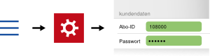

ePaper abonnieren oder testen
Testen Sie das ePaper 14 Tage lang kostenlos als Probeabo.
Oder werden Sie direkt Digitalleser*in und bestellen Sie ein ePaper-Abo auf taz.de. Hier gibt es auch alle wichtigen Informationen zum ePaper und zu unseren Aboprämien.
Nach der Bestellung des (Probe-)Abos erhalten Sie in der Regel bis zum nächsten Werktag Ihre Abo-ID und Ihr Passwort per E-Mail.
schließenMit Abo-ID und Passwort anmelden
Wenn Sie ein Abo abgeschlossen haben oder bereits ePaper-Abonnent*in sind, geben Sie bitte in den Einstellungen der App Ihre Abo-ID und Ihr Passwort ein.

Sind die Angaben korrekt, färben sich die Eingabefelder grün und Sie haben sich erfolgreich angemeldet.
Jetzt können Sie die aktuellen taz-Ausgaben herunterladen und lesen.
Bei Fragen zur App: app@taz.de
Kontakt zur Abo-Abteilung: digiabo@taz.de
schließenDie App-Einstellungen anpassen
In den Einstellungen können Sie die App konfigurieren. Hier hinterlegen Sie auch Ihre Kundendaten.
Kundendaten
Abo-ID
Passwort
Hier geben Sie Ihre Kundendaten ein, die Sie nach der Bestellung eines ePaper-Abos per E-Mail erhalten haben. Sind die Angaben korrekt, färben sich die Eingabefelder grün und Sie haben sich erfolgreich angemeldet.
Bei Fragen zur App: app@taz.de
Kontakt zur Abo-Abteilung: digiabo@taz.de
Alte Ausgaben
Bei Backup sichern
Aktivieren Sie diese Funktion, wenn Ihre heruntergeladenen Ausgaben bei einem iTunes- bzw. iCloud-Backup gesichert werden sollen.
Automatisch löschen
Nach ❏ Tagen
Aktivieren Sie diese Funktion, wenn ältere Ausgaben automatisch von Ihrem Gerät gelöscht werden sollen.
Geben Sie an, nach wie vielen Tagen das Löschen durchgeführt werden soll.
SEITENANSICHT
Ganze Seite
Ist diese Funktion aktiviert, wird auf größeren Bildschirmen (zum Beispiel auf dem iPad) eine Zeitungsseite in ihrer vollen Höhe angezeigt. Bei deaktivierter Funktion wird die Seite so angezeigt, dass sie in der Breite den Bildschirm komplett ausfüllt.
Artikelansicht ein
Bei aktivierter Funktion können Sie beim Lesen in die Artikelansicht wechseln. Ist diese Funktion ausgeschaltet, bleiben Sie beim Lesen in der Seitenansicht.
ARTIKELANSICHT
Normal – Sepia – Nacht
Wählen Sie zwischen den drei möglichen Textansichten durch Tippen auf das entsprechende Feld.
Horizontal scrollen
Aktiviert
Sie können durch einen Artikeltext blättern, indem sie nach links oder rechts wischen bzw. auf den linken oder rechten Bildschirmrand tippen. Die Bilder eines Artikels werden dabei nicht angezeigt.
Zum nächsten/vorherigen Artikel gelangen Sie durch Wischen nach oben/unten.
Deaktiviert
Beim Lesen können Sie von oben nach unten durch den Artikel scrollen (wie auf einer Website). Die Bilder eines Artikels werden dabei angezeigt. Zum nächsten/vorherigen Artikel gelangen Sie durch Wischen nach links/rechts.
Weiterscrollen
Ist diese Funktion aktiviert, können Sie am Ende eines Artikels direkt zum nächsten Artikel weiterscrollen.
Tippen am Rand
Bei aktivierter Funktion können Sie durch den Artikeltext blättern, indem Sie auf den rechten oder linken Bildschirmrand tippen.
Spaltenbreite
Sie können festlegen, wie breit die Textspalten in der Artikelansicht sein sollen.
Textgröße
Hier stellen Sie ein, in welcher Größe der Text in der Artikelansicht angezeigt werden soll.
WEITERE EINSTELLUNGEN
Einstellungen zurücksetzen
Tippen Sie auf „Einstellungen zurücksetzen“, um die App-Konfiguration wieder in den Ausgangszustand zu versetzen.
Hinweis: Das Zurücksetzen betrifft nur die Einstellungen. Ihre Kundendaten und alle heruntergeladenen Ausgaben bleiben erhalten.
schließenDie drei verschiedenen Ansichten in der App
Ausgabenansicht
Die Ausgabenansicht ist die Startansicht der App. Hier finden Sie eine Übersicht aller verfügbaren und heruntergeladenen taz-Ausgaben.

Durch Tippen auf eine Ausgabe wechseln Sie zur Seitenansicht dieser Ausgabe.
Seitenansicht
Hier können Sie die Einzelseiten einer ausgewählten Ausgabe durchblättern und lesen.

Durch Tippen auf einen Artikel wechseln Sie zur Artikelansicht.
Artikelansicht
In dieser Ansicht können Sie die Artikel einzeln lesen.

Ausgaben herunterladen, Ausgaben löschen (Ausgabenansicht)
Die einzelnen Ausgaben des ePapers können Sie in der Ausgabenansicht verwalten. Das ist die Startansicht der App. Dort sehen Sie alle heruntergeladenen und verfügbaren (gelblich eingefärbt) Ausgaben.
| neue verfügbare Ausgaben anzeigen | von oben nach unten ziehen |
| Download einer Ausgabe starten | verfügbare Ausgabe antippen (Ansicht wechselt direkt in die Seitenansicht) |
| Download mehrerer Ausgaben starten |
1.  2. Ausgaben antippen und markieren 3. 
|
| Markierung(en) aufheben | |
| in die Seitenansicht wechseln | heruntergeladene Ausgabe antippen |
| Ausgabe(n) löschen |
1. 2. Ausgabe(n) antippen und markieren 3. 
|
| Einstellungen und Hilfetexte aufrufen |
1.  oder vom linken Rand hereinschieben 2.  bzw. bzw. 
|
Bitte beachten Sie: Wie lange der Download einer Ausgabe dauert, ist abhängig von Ihrer Internetverbindung.
schließenDurch eine Ausgabe blättern und einzelne Seiten lesen (Seitenansicht)
In der Seitenansicht können Sie durch eine Ausgabe blättern und die einzelnen Seiten lesen.
Um zur Seitenansicht zu gelangen, tippen Sie in der Ausgabenansicht auf die gewünschte Ausgabe.
| in der Ausgabe blättern | nach links und rechts wischen |
| eine Seite vergrößern bzw. verkleinern (zoomen) | zwei Finger auf dem Display spreizen bzw. zusammenführen |
| in die Artikelansicht wechseln | einen Artikel antippen |
| Seitenübersicht dieser Ausgabe anzeigen |
oder vom linken Bildschirmrand hereinschieben |
| Hilfetexte anzeigen |  |
| Inhaltsverzeichnis anzeigen | |
| alle Artikel mit Lesezeichen anzeigen |  |
| zurück zur Seitenübersicht |  |
| zurück zur Ausgabenansicht |
Einzelne Artikel lesen (Artikelansicht)
In der Artikelansicht können Sie die Artikel einzeln lesen.
Um zur Artikelansicht zu gelangen, tippen Sie in der Seitenansicht auf den gewünschten Artikel, dann wird der Artikeltext angezeigt.
Hinweise:
Die Artikelansicht können Sie in den Einstellungen deaktivieren.
Die Bilder in einem Artikel werden in dieser Ansicht nur angezeigt, wenn Sie von oben nach unten durch den Artikel scrollen, also wenn die Einstellung „Horizontal scrollen“ deaktiviert ist.
| durch Artikeltext blättern ... | |
| ... wenn „Horizontal scrollen“ aktiviert | nach links oder rechts wischen bzw. auf den rechten oder linken Rand tippen |
| ... wenn „Horizontal scrollen“ deaktiviert | von oben nach unten scrollen (wie bei einer Website) |
| zum nächsten/vorigen Artikel wechseln ... | |
| ... wenn „Horizontal scrollen“ aktiviert | nach oben bzw. unten wischen |
| ... wenn „Horizontal scrollen“ deaktiviert | nach links oder rechts wischen |
| ... wenn „Weiterscrollen“ aktiviert | am Ende eines Artikels einfach weiterscrollen |
| Lesezeichen für den ausgewählten Artikel setzen |  |
| ein Lesezeichen wurde gesetzt |  |
| Artikel teilen |
1.  2. aus Teilen-Optionen auswählen |
| Inhaltsverzeichnis dieser Ausgabe anzeigen |
oder vom linken Rand hereinschieben |
| Hilfetexte anzeigen | |
| alle Artikel mit Lesezeichen anzeigen | |
| Seitenübersicht dieser Ausgabe anzeigen | |
| zurück zur Seitenansicht |  |
Übersicht aller Symbole
|
in der Ausgabenansicht:
zu den Einstellungen und Hilfetexten in der Seitenansicht:Seitenübersicht der Ausgabe anzeigen in der Artikelansicht:Inhaltsverzeichnis der Ausgabe anzeigen |
|
Einstellungen |
|
Hilfetexte |
|
Artikel teilen |
|
markierte Ausgabe(n) herunterladen |
|
Ausgabe(n) markieren (Symbol antippen, dann zu markierende Ausgabe(n) antippen) |
| Markierung(en) aufheben | |
|
markierte Ausgabe(n) löschen |
 |
Inhaltsverzeichnis anzeigen |
|
Lesezeichen setzen | |
Lesezeichen ist gesetzt |
|
Seitenübersicht anzeigen |
|
alle Artikel mit Lesezeichen anzeigen |